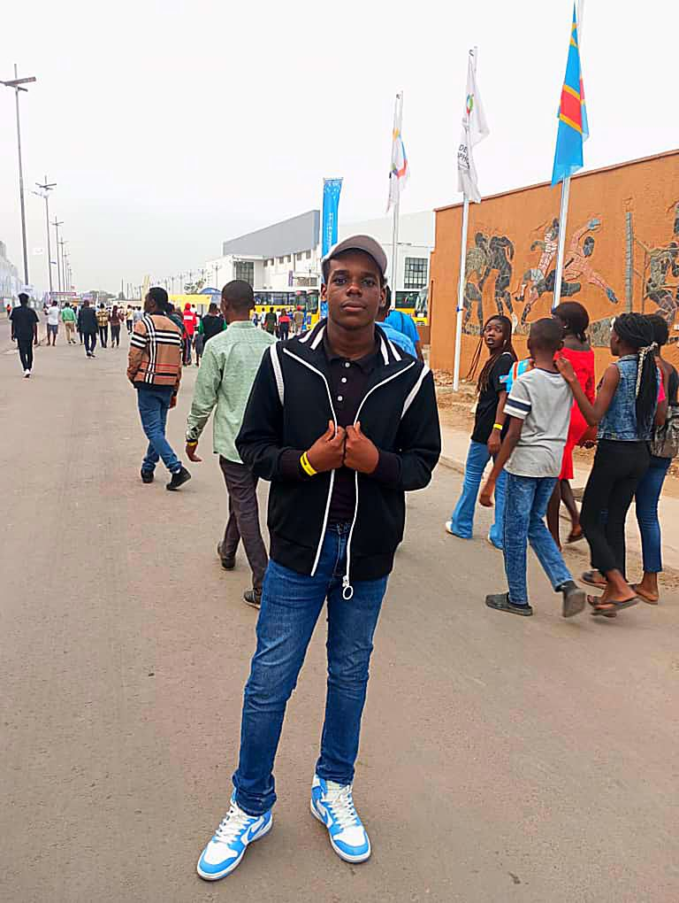

A propos de moi
Je m'appelle Kipaka Bakari Michel. Je suis né à Kinshasa, le 18 janvier 2007. Actuellement étudiant à l'Université Protestante au Congo en L1 LMD de la faculté des Sciences informatiques. J'ai choisi cette filière parce que le monde moderne est dominé par l'informatique, une science en constante évolution. Face à cette constante évolution , il est important pour moi de m'adapter à cette realité pour contribuer activement à ce secteur en pleine croissanace.
Intelligent , optimiste et determiné , je suis pret à rélever tous les défis pour atteindre mon objectif qui est : Devenir ingenieur informaticien